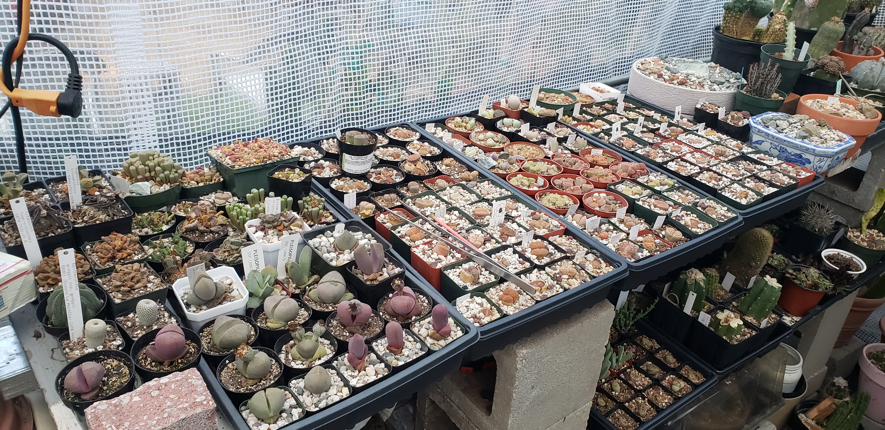

Welcome, Visitors!
The Cactus and Succulent Society of San Jose (CSSSJ) welcomes you to our website.
The CSSSJ is a diverse group of people with a mutual interest in and fascination for cacti and other succulent plants.
Succulent plants are among the most bizarre, beautiful, and varied in the entire plant kingdom. If you share our interest in these fascinating and unique plants, or just want to learn more, we invite you to join us at our meetings and have some fun.
If you’d like to become a member, you can do so for $15 a person, or $20 a couple. See the Membership Page for additional details.
Upcoming Events
Club Meeting
Sunday, June 4th: James Endo's Garden Story

For our June meeting, CSSSJ member James Endo will share his garden story through a presentation of photos and discussion. He will present how his succulent and cacti collection transformed during COVID. If you haven’t met James in person yet, you may have seen his posts on our CSSSJ Facebook group*. He loves to share what is going on in his garden, and there is always a lot happening!
He will go briefly into his family’s history in the Morgan Hill nursery business before showing us the diverse home garden where he propagates in simple structures, and giving us some tips to set up and grow your garden. His passion is propagating beautiful plants, and he’s prolific at it. He micrografts tiny seedlings, or cactus pups, onto pereskiopsis, a leafy jungle cactus, to produce unique results.
We look forward to seeing his presentation and hearing about his techniques. He will bring some plants in to give away at the meeting.
* If you would like to join our CSSSJ Facebook social group, you can either go to this link facebook.com/groups/sjcactus or you can search for “San Jose Cactus and Succulent Society” under Facebook groups.
Spring Show and Sale — Postponed
The Spring Show & Sale was cancelled due to a last-minute PG&E repair operation over which we had no control. We are in the process of setting up a replacement Show & Sale, to take place in a different location toward the end of June. Details coming very soon.
Send questions or comments to the CSSSJ Webmaster: webmaster@csssj.org